마케터 직무별 클로드 세팅 5개
30초 요약
- 클로드에 카피만 시키고 있다면, 직무별 반복 업무에 바로 쓸 수 있는 세팅이 다섯 개 더 있어요. MCP 연결 없이도 돼요.
- 퍼포먼스는 Claude Code, 콘텐츠는 marketingskills, 팀장은 내 스킬 만들기, 브랜드는 Artifacts 공유, CRM은 예약 작업이에요.
- 직무마다 세팅 방법과 바로 붙여 쓰는 요청문 3개씩, 모두 15개를 정리했어요. 팀장 섹션에는 그대로 올리는 스킬 파일 전문도 있어요.
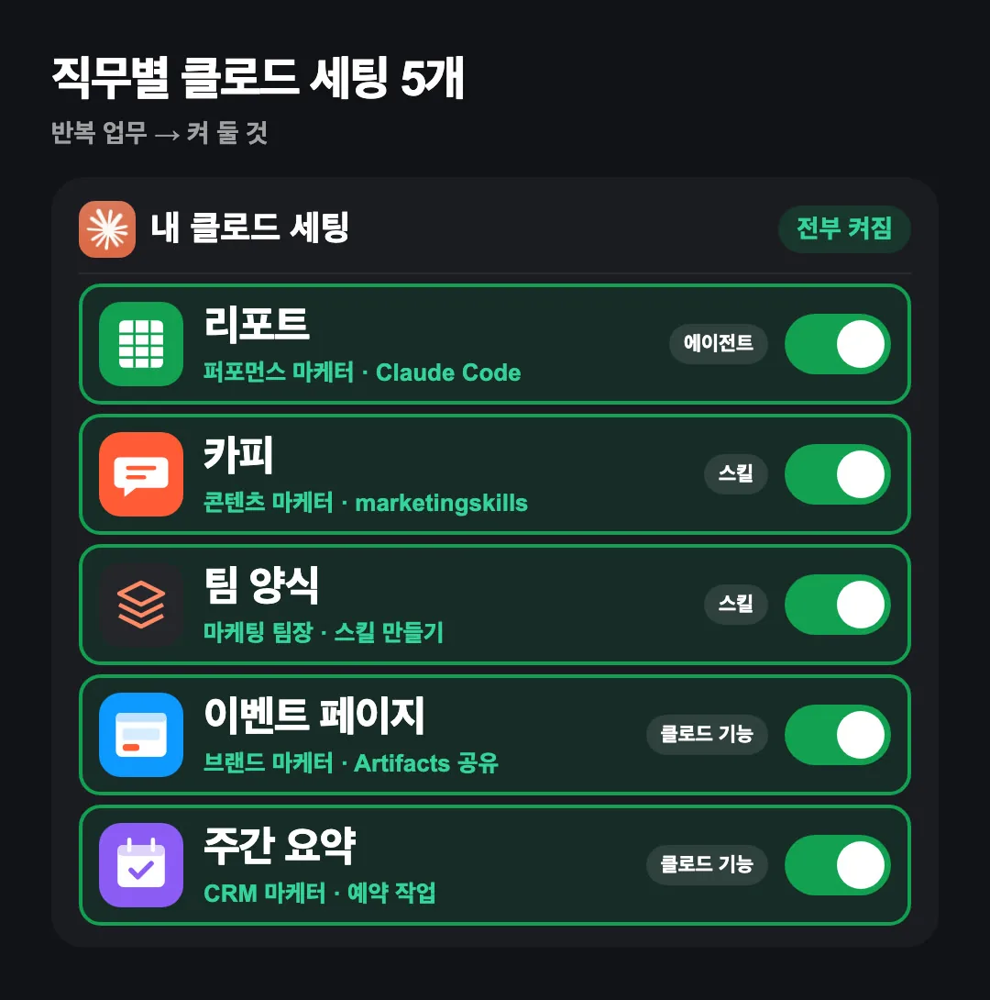
| 직무 | 반복 업무 | 세팅 | 종류 | 필요한 플랜 | 난이도 |
|---|---|---|---|---|---|
| 퍼포먼스 마케터 | 매체별 광고 리포트 합치기 | Claude Code | 에이전트 | Pro 이상 | 보통 |
| 콘텐츠 마케터 | 채널별 카피·SNS 글 | marketingskills | 스킬(무료 오픈소스) | Claude Code에서 쓰면 Pro 이상 | 보통 |
| 마케팅 팀장 | 매주 같은 형식의 보고서 | 스킬 만들기 | 스킬 | 무료 플랜부터 | 보통 |
| 브랜드 마케터 | 이벤트·랜딩 페이지 공유 | Artifacts 공유 | 클로드 기능 | 무료 플랜부터 | 쉬움 |
| CRM 마케터 | 매주 반복 보고 | 예약 작업 | 클로드 기능 | Pro 이상 | 보통 |
1. 시작 전 준비
이것만 확인하세요
- Claude 데스크톱 앱을 설치해 두세요(macOS·Windows). Claude Code는 데스크톱 앱의 Code 탭에서 써요.
- 2026년 9월 16일부터 Chat과 Cowork가 하나의 Claude로 합쳐지고 있어요(Pro·Max부터 순차 적용, Team·무료는 이후). 입력창에 Chat·Cowork 선택이 없으면 합쳐진 새 화면이에요. 따로 고를 필요 없이 대화창에 하고 싶은 일을 쓰면, 클로드가 바로 답할지 작업으로 처리할지 알아서 정해요.
- Claude Code(Code 탭)와 예약 작업은 유료 플랜(Pro, Max, Team, Enterprise)에서 쓸 수 있어요.
- 스킬을 쓰려면 설정 → Capabilities → "Code execution and file creation"이 켜져 있어야 해요(Team·Enterprise는 관리자 설정).
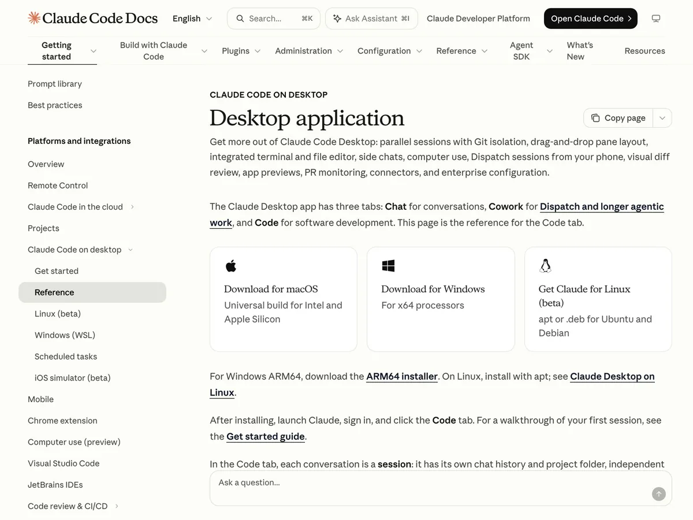
2. 퍼포먼스 마케터 — Claude Code로 광고 리포트 폴더째 정리
이럴 때 매주 월요일마다 메타·구글·네이버·카카오에서 리포트를 내려받아 엑셀에 복붙하고, 열 이름을 맞추고, 합계를 다시 계산하고 있다면요. 무엇인가요 Claude Code는 내 컴퓨터의 폴더와 파일을 직접 열어서 작업하는 에이전트예요. 데스크톱 앱의 Code 탭에서 쓸 수 있어서 터미널을 몰라도 돼요. 파일 여러 개를 읽고, 합치고, 새 엑셀 파일로 저장하는 일을 한 번에 맡길 수 있어요. 세팅 방법
- 데스크톱 앱에서 Code 탭을 눌러요.
- 리포트 파일을 모아 둔 폴더(예:
광고_리포트)를 작업 폴더로 열어요. - (선택) 수식이 살아 있는 엑셀을 더 깔끔하게 만들려면 Anthropic 공식 문서 스킬을 설치해요. 입력창에 아래 두 줄을 차례로 넣으면 돼요.
/plugin marketplace add anthropics/skills
/plugin install document-skills@anthropic-agent-skills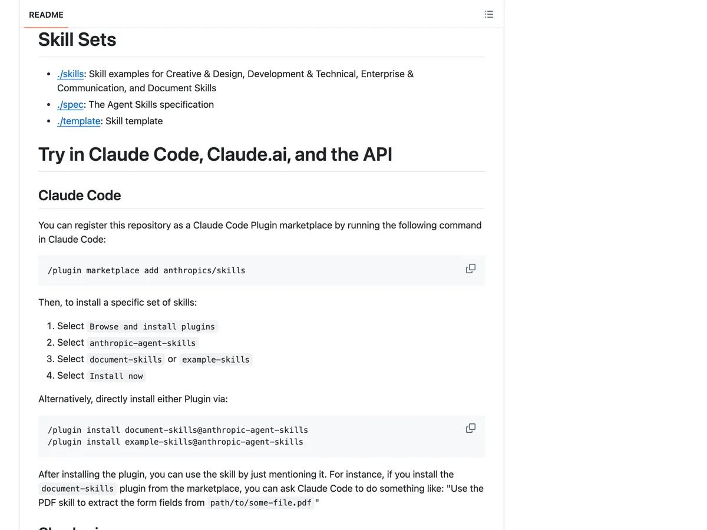
실제로 돌려 봤어요 (예시 데이터) 매체마다 열 이름이 다른 CSV 4개를 폴더에 넣고 "합쳐서 주간 리포트로 만들어 줘"라고만 했어요. 열 이름을 맞춰 원본 시트로 합치고, 요약·매체별 시트를 수식으로 만들어 새 파일로 저장했어요.
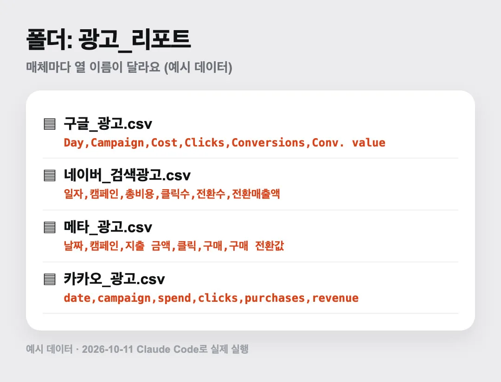
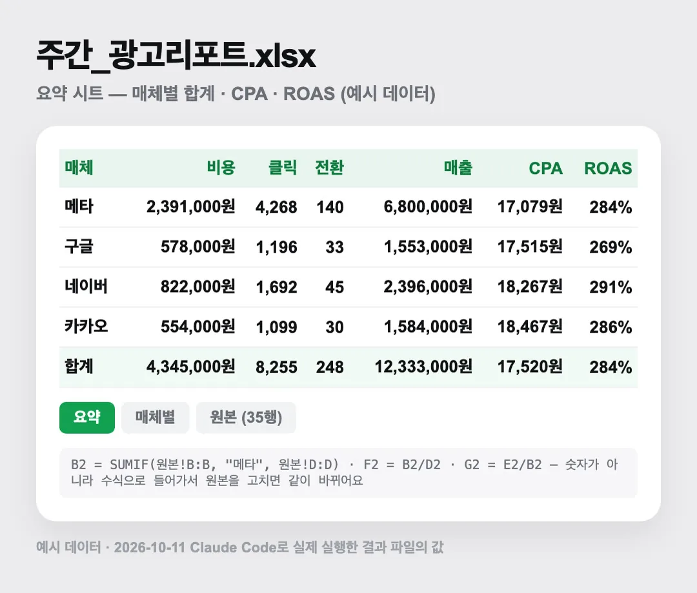
바로 쓰는 요청문 3개
이 폴더의 광고 리포트 CSV를 전부 읽어서 주간 리포트 엑셀로 만들어줘.
- 매체마다 열 이름이 다르니까 날짜·매체·캠페인·비용·클릭·전환·매출로 맞춰서 '원본' 시트에 합쳐줘
- '요약' 시트: 매체별 비용·클릭·전환·매출 합계와 CPA, ROAS를 수식으로
- 원본 파일은 건드리지 말고 새 파일 '주간_광고리포트_[날짜].xlsx'로 저장해줘'주간_광고리포트.xlsx'에서 매체별 CPA가 지난주보다 20% 넘게 오른 캠페인만 골라서
'점검 필요' 시트를 만들어줘. 왜 올랐는지 클릭·전환 변화로 한 줄씩 설명도 붙여줘.이번 주 리포트와 지난주 리포트를 비교해서
팀장 보고용으로 핵심 변화 3줄 요약을 써줘. 숫자는 파일에 있는 것만 써줘.주의할 점 · 안 될 때
- 회사 데이터는 필요한 폴더만 열어서 맡기세요. 작업 전에 어떤 파일을 읽고 쓰는지 확인하는 단계가 나오면 꼭 읽고 허락하세요.
- "원본은 건드리지 말고 새 파일로"를 요청문에 넣어 두면 실수로 덮어쓰는 일을 막을 수 있어요.
- 열 이름이 너무 다르면 "메타의 '지출 금액'은 비용이야"처럼 짝을 알려 주세요.
3. 콘텐츠 마케터 — marketingskills로 채널별 카피
이럴 때 인스타·블로그·광고 문구를 매번 처음부터 쓰고, 클로드한테도 "인스타는 짧게, 해시태그는…"을 매번 설명하고 있다면요. 무엇인가요 marketingskills는 마케팅 업무별 작업 방식을 스킬로 정리한 오픈소스 묶음이에요(MIT 라이선스, 만든 사람 Corey Haines). 카피라이팅, SNS, 광고 소재, 이메일 같은 스킬을 깔아 두면, 관련 요청을 할 때 클로드가 해당 스킬의 기준대로 써요. 세팅 방법 (Claude Code 기준, Node.js 필요)
- Code 탭의 터미널이나 내 컴퓨터 터미널에서 아래 명령을 실행해요. 설치할 에이전트를 자동으로 찾아 넣어 줘요.
npx skills add coreyhaines31/marketingskills- 전부 말고 필요한 것만 깔고 싶으면 이름을 지정해요.
npx skills add coreyhaines31/marketingskills --skill copywriting social ad-creative copy-editing- 어떤 스킬이 있는지 먼저 보고 싶으면
--list를 붙여요. 2026년 10월 11일에 실제로 실행해 보니 스킬 50개가 나왔어요.
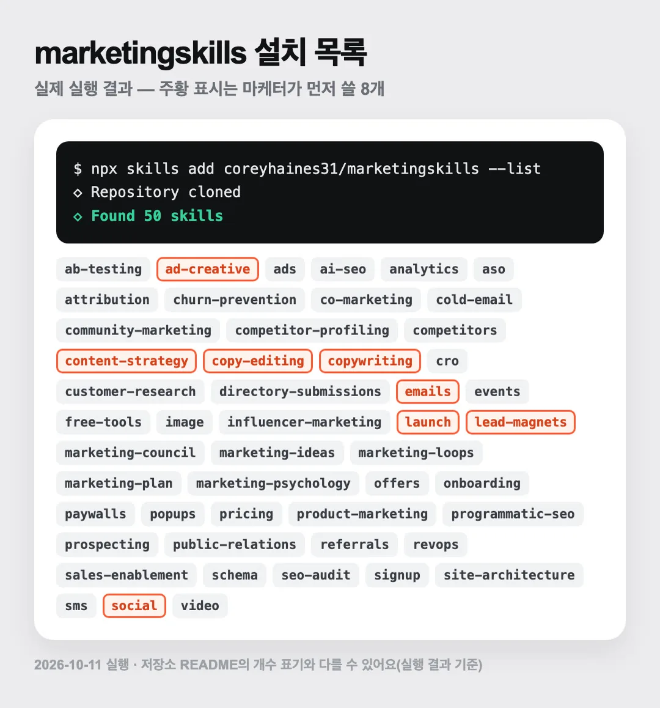
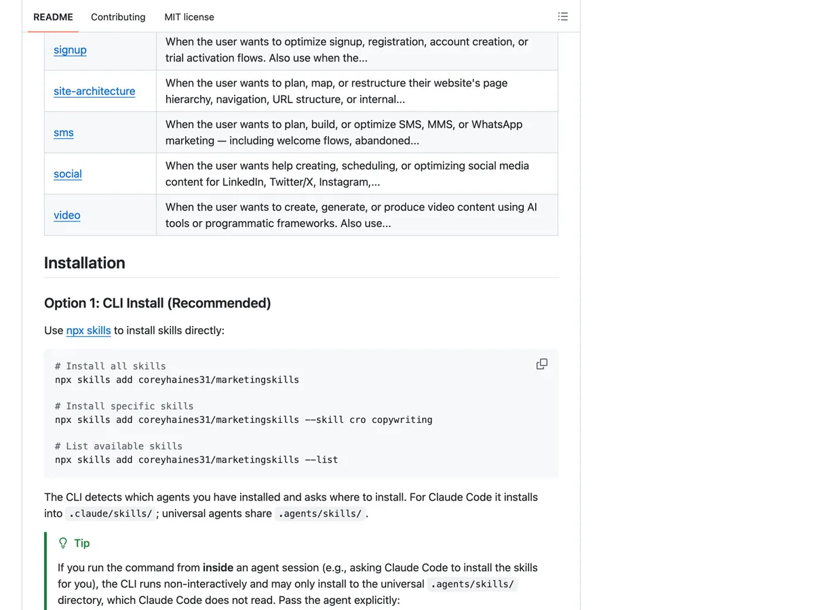
| 먼저 쓸 스킬 | 하는 일 |
|---|---|
copywriting | 페이지·광고용 마케팅 카피 쓰기 |
copy-editing | 이미 쓴 카피 다듬기 |
social | 인스타·링크드인 등 SNS 글, 릴스·숏폼 대본 |
ad-creative | 광고 헤드라인·문구 변형 여러 개 |
emails | 이메일 시퀀스 |
content-strategy | 어떤 콘텐츠를 만들지 계획 |
launch | 신제품 출시 계획 |
lead-magnets | 리드마그넷 기획 |
바로 쓰는 요청문 3개
신제품 [제품명] 출시 소식을 채널별로 써줘.
인스타 피드 캡션 1개, 네이버 블로그 도입부 3문단, 메타 광고 헤드라인 5개.
타깃: [타깃], 핵심 혜택: [혜택 1~2개]. 과장 표현은 빼줘.아래 랜딩페이지 카피를 copy-editing 기준으로 다듬어줘.
고친 이유를 한 줄씩 옆에 달아줘.
(카피 붙여넣기)[제품명] 메타 광고 문구를 ad-creative로 10개 만들어줘.
혜택형·공감형·후기형으로 나눠서 각각 3~4개씩.주의할 점 · 안 될 때
npx는 Node.js가 깔려 있어야 동작해요.- 설치 후 스킬이 안 잡히면 Claude Code를 새 세션으로 다시 열어 보세요.
- 스킬 개수는 저장소가 업데이트되면서 바뀌어요.
--list로 지금 목록을 확인하세요.
4. 마케팅 팀장 — 우리 팀 보고서 양식을 스킬로 만들기
이럴 때 팀원마다 보고서 형식이 달라서 매주 고쳐 주고 있거나, 클로드에 보고서를 시킬 때마다 "요약 → 지표 → 잘된 점 → 다음 주 할 일 순서로"를 다시 쓰고 있다면요. 무엇인가요 스킬은 "이 일은 이렇게 해"를 적어 둔 폴더예요. SKILL.md 파일 하나로 만들 수 있고, 올려 두면 관련 요청이 들어올 때 클로드가 알아서 꺼내 써요. 우리 팀 양식을 스킬로 만들어 두면 누가 시켜도 같은 형식으로 나와요. 세팅 방법 (claude.ai·데스크톱 앱)
- 아래
SKILL.md전문을 복사해서weekly-report-format이라는 폴더 안에SKILL.md로 저장해요. 섹션 이름은 우리 팀에 맞게 바꿔도 돼요. - 그 폴더를 ZIP으로 압축해요.
- Customize → Skills에서 + → + Create skill → Upload a skill을 눌러 ZIP을 올려요.
- 목록에 생긴 스킬의 토글을 켜요. 이제 "이번 주 보고서 써줘"라고 하면 이 양식으로 나와요.
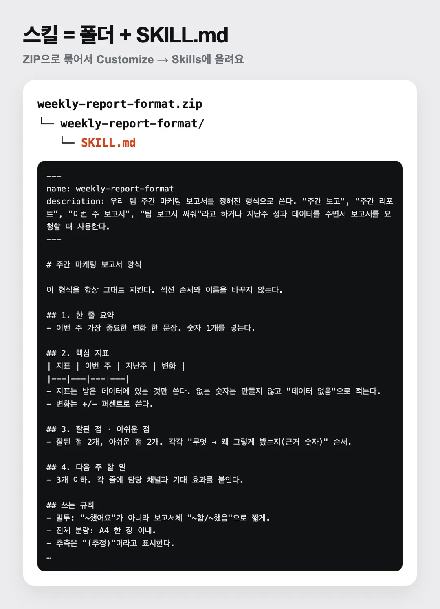
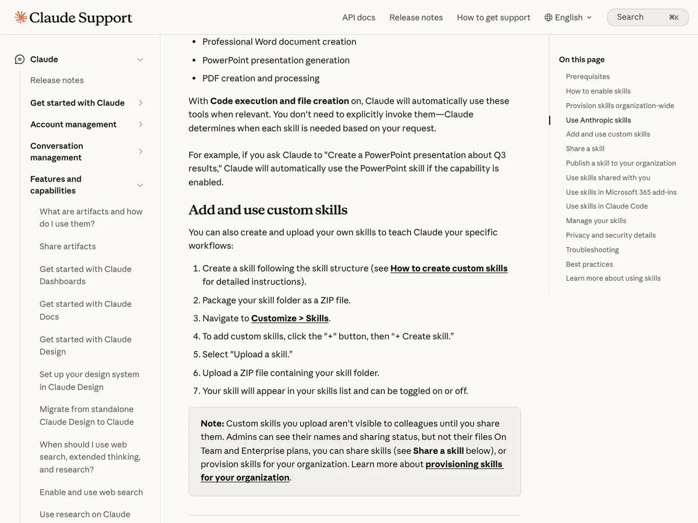
복사해서 쓰는 스킬 파일 (SKILL.md 전문)
---
name: weekly-report-format
description: 우리 팀 주간 마케팅 보고서를 정해진 형식으로 쓴다. "주간 보고", "주간 리포트", "이번 주 보고서", "팀 보고서 써줘"라고 하거나 지난주 성과 데이터를 주면서 보고서를 요청할 때 사용한다.
---
# 주간 마케팅 보고서 양식
이 형식을 항상 그대로 지킨다. 섹션 순서와 이름을 바꾸지 않는다.
## 1. 한 줄 요약
- 이번 주 가장 중요한 변화 한 문장. 숫자 1개를 넣는다.
## 2. 핵심 지표
| 지표 | 이번 주 | 지난주 | 변화 |
|---|---|---|---|
- 지표는 받은 데이터에 있는 것만 쓴다. 없는 숫자는 만들지 않고 "데이터 없음"으로 적는다.
- 변화는 +/− 퍼센트로 쓴다.
## 3. 잘된 점 · 아쉬운 점
- 잘된 점 2개, 아쉬운 점 2개. 각각 "무엇 → 왜 그렇게 봤는지(근거 숫자)" 순서.
## 4. 다음 주 할 일
- 3개 이하. 각 줄에 담당 채널과 기대 효과를 붙인다.
## 쓰는 규칙
- 말투: "~했어요"가 아니라 보고서체 "~함/~했음"으로 짧게.
- 전체 분량: A4 한 장 이내.
- 추측은 "(추정)"이라고 표시한다.바로 쓰는 요청문 3개
지난주 보고서 2개를 붙일게. 공통 형식을 뽑아서 우리 팀 주간 보고서 스킬(SKILL.md)로 만들어줘.
name은 영어 소문자와 하이픈으로, description에는 언제 이 스킬을 쓰는지 한국어로 자세히.
(보고서 붙여넣기)이번 주 데이터로 주간 보고서 써줘.
(성과 표 붙여넣기 또는 파일 첨부)주간 보고서 스킬에 '다음 주 할 일' 아래에 '예산 변경 요청' 섹션을 추가해서 SKILL.md를 다시 만들어줘.주의할 점 · 안 될 때
- 스킬 목록이 안 보이면 설정 → Capabilities → "Code execution and file creation"을 켜세요. Team·Enterprise는 관리자가 켜야 해요.
- 직접 쓰기 어렵다면 Anthropic이 제공하는 Skill Creator 스킬에 "우리 팀 보고서 스킬 만들어줘"라고 하면, 질문을 하면서
SKILL.md를 대신 만들어 줘요. - 올린 스킬은 기본으로 나만 써요. 팀과 공유하는 방법은 플랜마다 달라요.
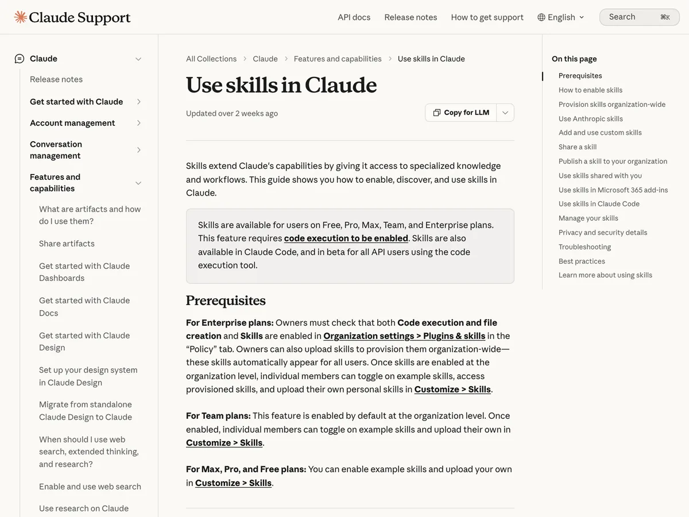
5. 브랜드 마케터 — Artifacts로 이벤트 페이지 만들어 링크로 공유
이럴 때 이벤트·사전 신청 페이지 시안을 보여 주려고 디자이너나 개발자에게 부탁하고 기다리고 있다면요. 내부 공유용 시안이나 간단한 안내 페이지는 바로 만들어 링크로 돌릴 수 있어요. 무엇인가요 Artifacts는 클로드가 대화 옆에 만들어 주는 페이지·문서·앱이에요. 다 만든 뒤 공유를 켜면 링크 하나로 다른 사람이 열어 볼 수 있어요. 세팅 방법
- "[브랜드명] 사전 신청 이벤트 랜딩 페이지를 만들어줘"처럼 요청해요.
- 아티팩트가 열리면 오른쪽 위 공유(Share)를 눌러요.
- 일반 액세스를 "나만"에서 링크가 있는 모든 사용자(Anyone with the link)로 바꾸고 링크를 복사해 보내요. 받은 사람은 볼 수만 있고 고칠 수는 없어요.
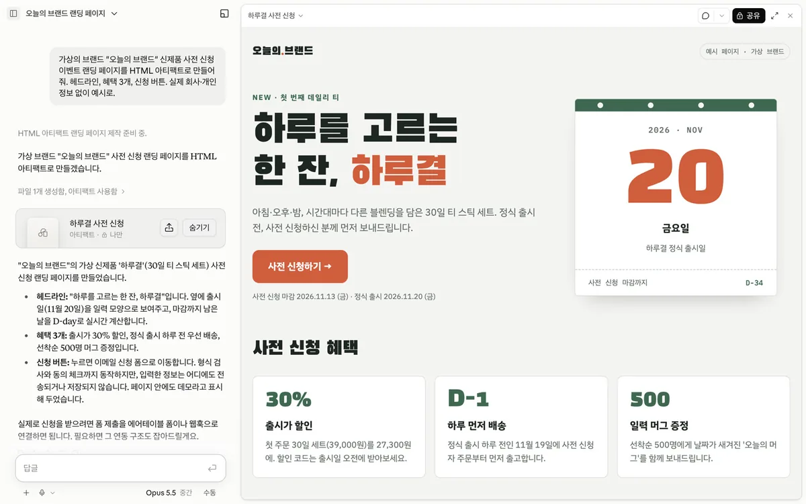
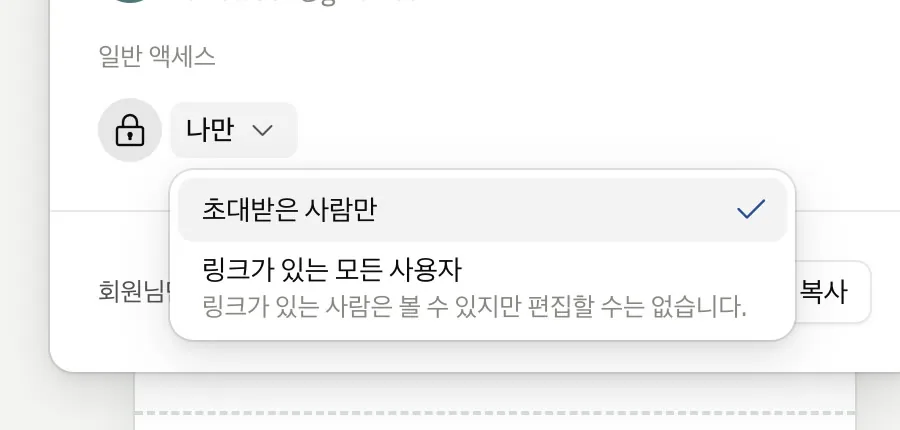
- 무료·Pro·Max: 모두 링크가 있는 모든 사용자로 공유할 수 있어요. Pro·Max는 특정 사람만 보게 이메일로 초대하는 것도 돼요(베타).
- Team·Enterprise: 기본은 조직 안에서만 열려요. 밖으로 공유하려면 관리자가 외부 공유를 켜야 해요.
- 예전에 만든 아티팩트는 공유 대신 Publish(게시) 버튼이 보일 수 있어요(무료·Pro·Max). 눌러서 공개 링크를 만드는 방식은 같아요.
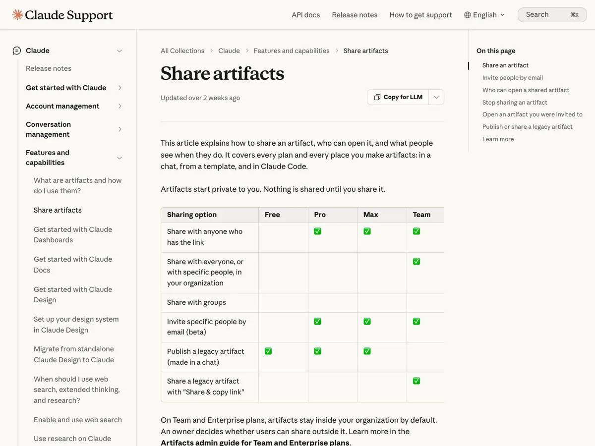
바로 쓰는 요청문 3개
[브랜드명] 신제품 사전 신청 이벤트 랜딩 페이지를 만들어줘.
헤드라인, 혜택 3개, 이벤트 기간, 신청 버튼. 브랜드 색은 [색상 코드].
모바일에서 먼저 보기 좋게.방금 페이지에 '자주 묻는 질문' 4개를 추가하고, 신청 버튼을 화면 아래에 고정해줘.이 페이지를 인스타 스토리용 9:16 이미지 안내 카드 3장으로도 만들어줘. 문구는 페이지와 같게.주의할 점 · 안 될 때
- 링크가 있는 사람은 누구나 열 수 있어요. 개인정보·내부 숫자·미공개 가격은 넣지 마세요.
- 실제 신청을 받는 폼은 별도 도구(구글 폼 등)를 연결하세요. 아티팩트는 시안·안내용으로 쓰는 게 안전해요.
- 예전 방식(Publish)으로 공개했다가 Unpublish하면 같은 아티팩트를 다시 공개할 수 없어요. 새로 만들어야 해요.
6. CRM 마케터 — 예약 작업으로 매주 요약 자동으로 받기
이럴 때 매주 월요일 아침에 지난주 고객 반응·문의·성과를 모아서 같은 형식으로 정리하고 있다면요. 무엇인가요 예약 작업은 한 번 설명해 둔 일을 정해진 주기마다 클로드가 알아서 실행하는 기능이에요. 결과는 Scheduled 메뉴에서 확인해요. Chat·Cowork가 합쳐진 뒤로는 따로 Cowork를 고르지 않아도 되고, 웹·데스크톱·모바일 어디서든 만들 수 있어요. 공식 도움말 기준(2026년 10월 확인)으로 예약 작업은 원격으로 돌아서, 컴퓨터가 잠들어 있거나 앱이 닫혀 있어도 정해진 시간에 실행돼요. 세팅 방법 (한국어 화면 기준)
- 합쳐진 새 화면이라면 가장 쉬운 방법: 대화창에 "매주 월요일 오전 9시에 지난주 ○○를 요약해줘"라고 쓰고, 클로드가 제안한 내용을 확인한 뒤 Schedule을 눌러요.
- 조건을 직접 정하고 싶다면 아래 순서대로 해요(예전 화면에서는 입력창 왼쪽 아래에서 Cowork를 먼저 골라요).
- 왼쪽 사이드바에서 예약됨(Scheduled)을 눌러요. 예약된 작업 페이지 아래에 일일 브리핑·주간 요약·주제 모니터링 같은 예시가 있어서, 눌러서 시작해도 돼요.
- 오른쪽 위 새 작업 → 직접 설정을 골라요. (클로드에게 질문받으며 만들려면 Claude와 함께 만들기)
- 예약 작업 만들기 창에서 이름, 지침(요청문), 빈도(매시간·매일·매주·평일·수동)와 요일·시간을 정하고 저장을 눌러요.
- 권한이 "자동"이면 클로드가 승인을 기다리지 않고 작업하고 커넥터를 써요. 처음에는 결과를 확인하면서 쓰세요.
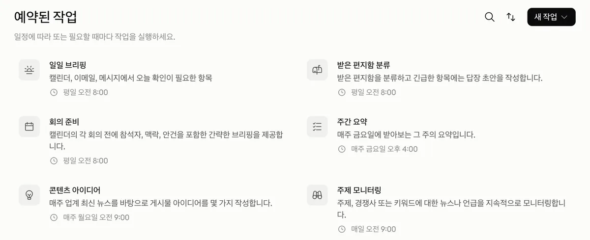
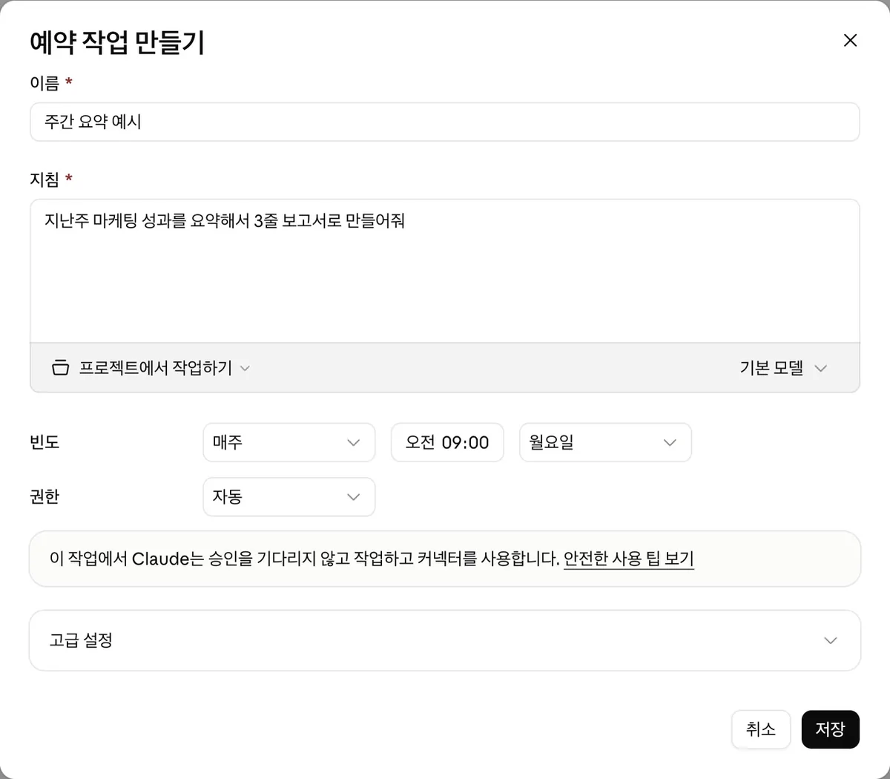
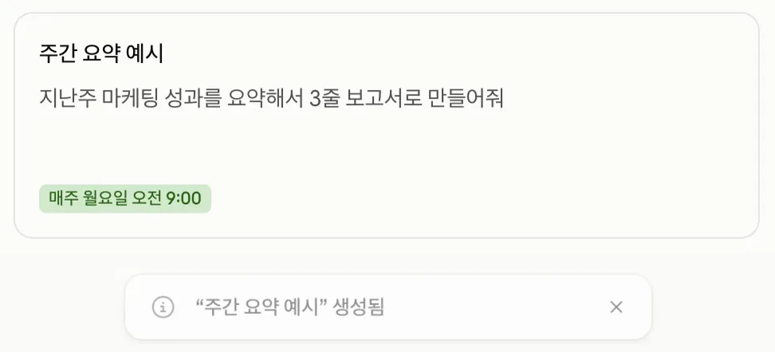
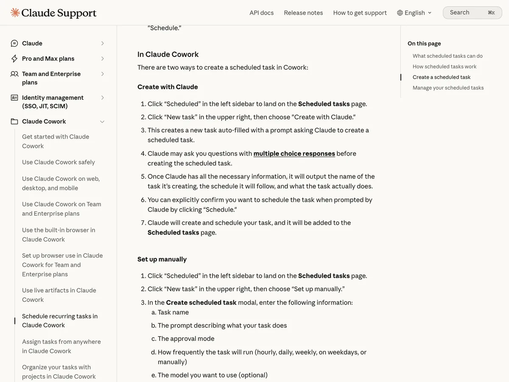
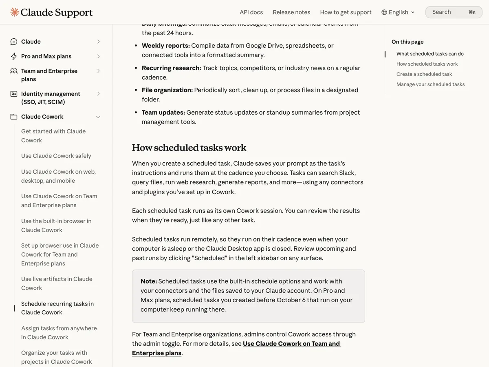
바로 쓰는 요청문 3개 (예약 작업의 요청문 칸에 넣기)
지난주(월~일) 고객 문의와 리뷰를 정리해서 보고해줘.
1) 많이 나온 주제 3개와 건수 2) 불만 1위와 대표 문장 3) 이번 주 바로 할 일 2개.
연결된 자료에 없는 숫자는 만들지 말고 "확인 필요"로 적어줘.매일 아침 9시에 어제 들어온 문의를 '답변 필요 / 단순 문의 / 칭찬'으로 나눠 표로 정리해줘.매월 1일에 지난달 재구매 고객 수, 이탈 고객 수, 주요 이탈 이유를 요약한 리포트를 만들어줘.주의할 점 · 안 될 때
- 예약 작업은 연결해 둔 커넥터와 내 Claude 계정에 저장된 파일을 써요. 요약할 데이터가 어디 있는지(구글 드라이브, 슬랙 등) 먼저 연결해 두세요.
- Pro·Max 플랜에서 10월 6일 전에 만든 예약 작업은 예전처럼 내 컴퓨터에서 실행돼요. 그런 작업은 컴퓨터가 켜져 있어야 해요.
- 결과가 기대와 다르면 작업을 열어 요청문이나 주기를 바로 고칠 수 있고, 일시 정지·삭제·지금 실행도 돼요.
7. 한 주 루틴 — 다섯 개 이어 쓰기
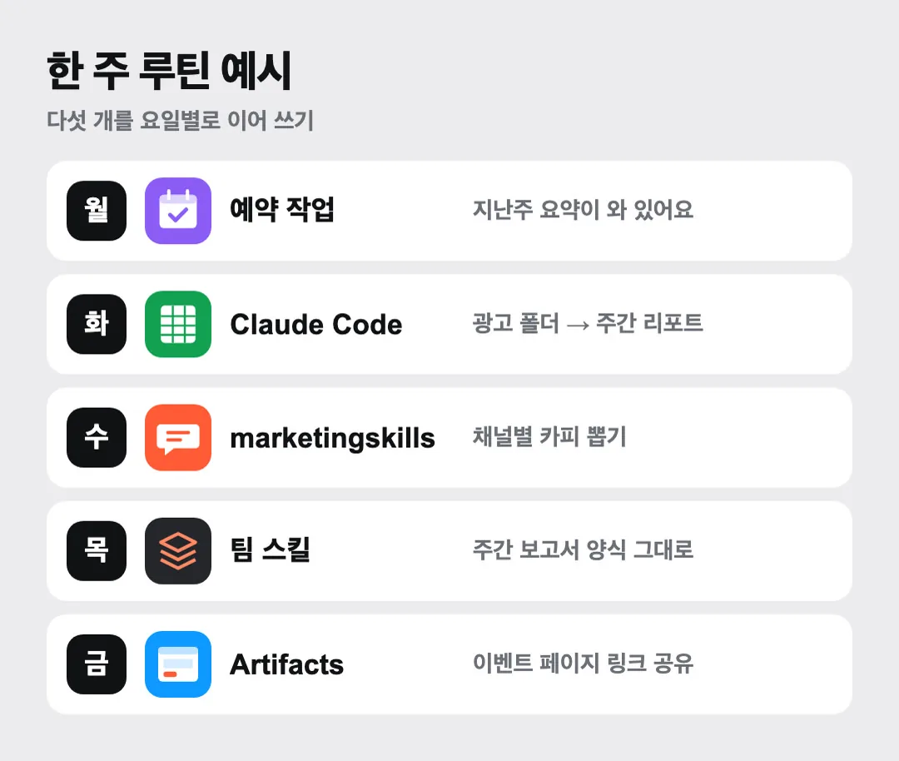
- 월 예약 작업이 만들어 둔 지난주 요약부터 확인해요.
- 화 Claude Code로 광고 리포트 폴더를 주간 리포트로 정리해요.
- 수 marketingskills로 이번 주 채널별 카피를 뽑아요.
- 목 팀 스킬로 주간 보고서를 같은 형식으로 써요.
- 금 Artifacts로 다음 주 이벤트 페이지 시안을 만들어 링크로 공유해요.
8. 자주 묻는 질문
무료로 다 되나요? 무료 플랜에서는 스킬 만들기·올리기와 아티팩트 링크 공유를 쓸 수 있어요. Claude Code와 예약 작업은 Pro 이상 유료 플랜이에요. marketingskills 자체는 무료 오픈소스(MIT)예요.
회사 데이터를 맡겨도 되나요? Claude Code는 내가 연 폴더 안에서 작업하고, 파일을 읽거나 쓰기 전에 확인을 받아요. 회사 규정상 외부 AI 사용에 제한이 있다면 먼저 확인하고, 예시처럼 필요한 파일만 따로 모아서 맡기세요.
한국어로 되나요? 네. 요청문을 한국어로 쓰면 한국어로 나와요. 스킬 파일(SKILL.md)도 한국어로 써도 돼요.
MCP랑 뭐가 달라요? MCP는 클로드를 다른 서비스(광고 관리자, 노션 등)의 데이터에 연결하는 방법이에요. 이 가이드의 다섯 개는 연결 없이 클로드 안에서 일하는 방식을 바꾸는 세팅이에요. 둘을 같이 쓰면 더 좋아요.
9. 공식 링크
- Claude 데스크톱 앱(Code 탭): https://code.claude.com/docs/en/desktop
- Anthropic 스킬 저장소(document-skills): https://github.com/anthropics/skills
- marketingskills: https://github.com/coreyhaines31/marketingskills
- 스킬 쓰기·올리기: https://support.claude.com/en/articles/12512180
- 아티팩트 공유: https://support.claude.com/en/articles/9547008-publishing-and-sharing-artifacts
- 예약 작업: https://support.claude.com/en/articles/13854387-schedule-recurring-tasks-in-claude-cowork
- Chat·Cowork 통합(웹·데스크톱·모바일): https://support.claude.com/en/articles/15520349-use-claude-cowork-on-web-desktop-and-mobile
기준 날짜: 2026년 10월 11일 (메뉴 이름·플랜·스킬 개수는 바뀔 수 있어요) 만든 사람: @work__zero — 클로드로 마케팅 일을 줄이는 방법을 릴스로 올려요. 팔로우해 두면 다음 편도 바로 받아볼 수 있어요.